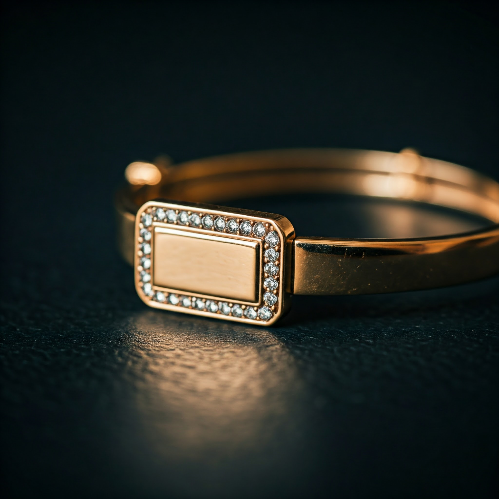

Златен пръстен - "Glittering Grace"
398 лв.
Описание
Златният пръстен е елегантен и изтънчен, с правоъгълен централен елемент, обграден от
блестящи циркониеви камъни. Изработен от висококачествено злато, дизайнът му съчетава
класика и модерен стил, което го прави подходящ аксесоар за специални поводи или като
изискано допълнение към ежедневната визия. Камъните около централния елемент добавят
допълнителен блясък, подчертавайки луксозния му характер. Този пръстен е символ на
изтънчен вкус и изисканост.
Причини да закупит златен пръстен Glittering Grace:
- Елегантен и изтънчен дизайн – подчертава стил и изисканост.
- Висококачествен материал – изработен от висококачествено злато.
- Комбинация от класически и модерен стил – подходящ за всякакви поводи.
- Универсален аксесоар – може да се носи както за специални събития, така и в ежедневието.
- Добавен блясък от циркониевите камъни – за луксозен вид.
- Израз на изтънчен вкус – символ на изисканост и класа.